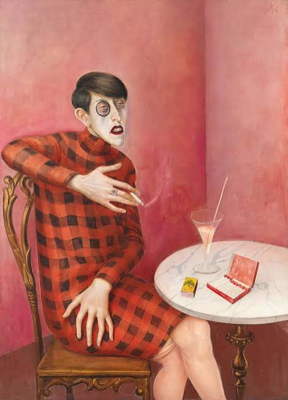
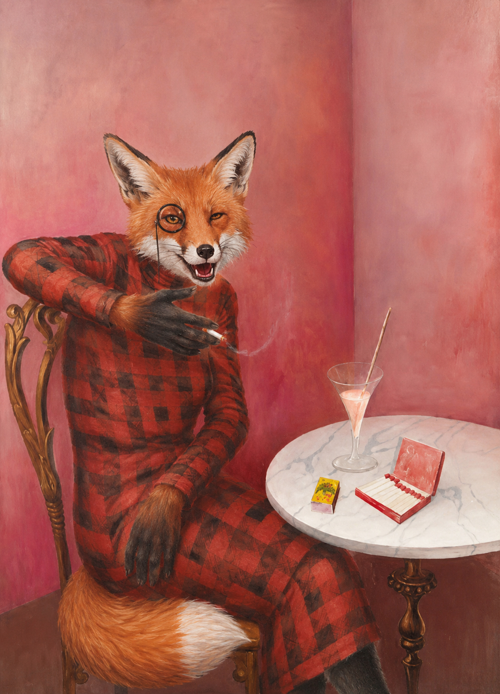

Le portrait de la journaliste, représente une journaliste de l'époque appelée Sylvia von Harden.
Ce tableau fait parti des Expressionnistes puis de la Nouvelle Objectivité

Le portrait de la journaliste renarde est le portrait d'une renarde journaliste.
Elle est très connue dans l'univers des renards. Elle fumait sa cigarette dans son café préféré.